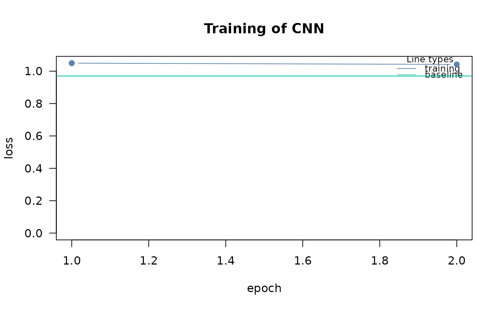

Describes, for every observation, a square window of a large GeoTIFF centered on the
observation's coordinates. The result is passed as X to cnn (or to a
cnn() term of mmn) in place of an array of images or a folder. The
windows are never extracted to disk: each batch is read from the raster when it is needed,
and with libtiff 4.5 or newer the next batch is read in the background while the current one trains.
Usage
raster_patches(
raster,
coords,
extent,
center = NULL,
scale = NULL,
standardize = FALSE,
transform = NULL,
fill = 0,
na_channel = FALSE,
like = NULL
)
# S3 method for class 'citoraster'
as.array(x, ...)Arguments
- raster
Path to a GeoTIFF. Any number of bands; 8, 16 and 32 bit integer and 32 and 64 bit float samples. Values are read as stored and converted to 32 bit float: integers above 2^24 are rounded, and 64 bit values beyond the float range become missing.
- coords
Matrix or data.frame with two columns, x and y, giving the center of each window in the coordinate reference system of
raster(which is not checked; a warning is given when windows lie entirely outside the raster). For a TIFF without georeferencing, x and y are pixel units from the top-left corner of the image, y pointing down, so that the center of the top-left pixel is (0.5, 0.5).- extent
Side length of the window in map units, rounded to whole pixels at the resolution of
raster(halves round up). The window is placed on the pixel grid of the raster: its center lies at most half a pixel fromcoords, and pixel values are never interpolated.- center, scale
NULL, or one value per channel (or a single value for all channels). Every channel is transformed as(value - center) / scale, aftertransform.- standardize
Logical.
TRUEestimatescenterandscaleas the mean and standard deviation of every channel over all windows ofcoords(aftertransform, without missing pixels). This reads every window once. Build it on the training coordinates only and passlikefor validation, test and prediction sites, so that their statistics do not enter the scaling.- transform
NULLor a function applied to every batch beforecenterandscale: it receives a float tensor[windows, bands, height, width]in the units of the raster, withNaNfor missing pixels, and returns a tensor with the same first dimension, e.g.function(x) torch::torch_log1p(x)or a band ratio. Channels and spatial size may change. It must treat every window on its own: statistics over the batch would make predictions depend on the batch size.- fill
Value for missing pixels (outside the raster, NoData,
NaN, and non-finite results oftransform), in the units aftercenterandscale: withstandardize = TRUE, the default 0 imputes the mean; without it, 0 is a value in the units of the raster, andna_channel = TRUElets the network tell it from an observed 0.- na_channel
Logical.
TRUEappends one channel that is 1 where any channel of the pixel is missing and 0 otherwise, so that the network can tell an imputed pixel from an observed one.- like
A
citorasterwhose raster, extent and preprocessing are reused for newcoords, e.g. to predict at new sites with thecenterandscaleestimated on the training windows. Onlycoordsmay be given together withlike.- x
A
citoraster.- ...
Not used.
Value
An object of class citoraster, which can be subset by observation with [.
as.array(): the windows as the network receives them, an array
[windows, channels, height, width] with all preprocessing applied. It reads every window
of x, so subset first, e.g. as.array(X[1:16]).
Details
Reading speed depends almost entirely on how the raster is stored. Every read decompresses whole
storage blocks. A raster stored in strips (the GeoTIFF default) has blocks of full-width rows, so a
window of 100 x 100 pixels from a 37800 pixel wide raster decompresses 100 rows of 37800 pixels; a tiled
raster has square blocks, and a window decompresses only the few tiles it overlaps. The gain grows with
the width of the raster: in our benchmarks a tiled copy was about 2 to 7 times faster for rasters 10000
to 12000 pixels wide and roughly 35 to 125 times faster for one 37800 pixels wide, and tiles of about the window size were
best (128 x 128 pixel tiles about twice as fast as 256 x 256 for windows of 100 pixels). Whether a file
is tiled is shown by X$info$tiled and X$info$block, and a large raster in strips gives a
warning. Converting it is a single step, done once before training:
terra::writeRaster(terra::rast("x.tif"), "x_tiled.tif", gdal = c("TILED=YES", "BLOCKXSIZE=128",
"BLOCKYSIZE=128", "COMPRESS=DEFLATE", "PREDICTOR=2")), with "PREDICTOR=3" for floating point
rasters, or outside R, with less memory, gdal_translate -co TILED=YES -co BLOCKXSIZE=128
-co BLOCKYSIZE=128 -co COMPRESS=DEFLATE -co PREDICTOR=2 -co BIGTIFF=IF_SAFER x.tif x_tiled.tif.
The values are unchanged; only their arrangement in the file differs. Only the first image of the file
is read (no overviews).
The number of reader threads is num_threads of cnn; mmn uses 4.
Missing pixels are those outside the raster, NaN, and pixels equal to the NoData value of
the GDAL_NODATA tag. Masks, alpha bands (read as an ordinary band), and scale and offset metadata
are not applied; apply an offset or scale factor with center and scale or transform.
Every batch is preprocessed in this order: the raw values are read (missing pixels as NaN),
transform is applied, then (value - center) / scale, then missing pixels are set to
fill and the na_channel is appended. Unlike images read from a folder, values are not
rescaled to the unit interval: rasters carry physical quantities, so normalization is left to these
arguments. Preprocessing is part of the citoraster, so a model fitted on it predicts on the same
scale; for new sites pass like. predict() refuses windows of another shape and warns
when the preprocessing differs from that of the training windows.
The raster is opened once per session and kept open. A file replaced by another one with the same modification time is not noticed; a file whose dimensions changed is refused.
Examples
# \donttest{
if(torch::torch_is_installed() && cito:::cito_decoder_available()[["tiff"]]){
library(cito)
# a small georeferenced raster stands in for a large satellite scene
f = system.file("extdata", "raster.tif", package = "cito")
coords = cbind(x = runif(200, 600100, 600900), y = runif(200, 5300100, 5300700))
# log-transform, then standardize every band with the mean and sd over the windows;
# missing pixels become 0 (the mean) and are flagged in an extra channel
X = raster_patches(f, coords, extent = 200, transform = function(x) torch::torch_log1p(x),
standardize = TRUE, na_channel = TRUE)
X
# the first four windows as the network sees them: [windows, channels, height, width]
dim(as.array(X[1:4]))
Y = matrix(rnorm(200), ncol = 1)
nn.fit = cnn(X = X, Y = Y, loss = "mse", epochs = 2L, batchsize = 32L,
architecture = create_architecture(conv(4), maxPool(), linear(10)))
# new sites, with the preprocessing of the training windows
new_coords = cbind(x = runif(5, 600100, 600900), y = runif(5, 5300100, 5300700))
predict(nn.fit, newdata = raster_patches(coords = new_coords, like = X))
}
#> Loss at epoch 1: 1.049537, lr: 0.01000

#> Loss at epoch 2: 1.041751, lr: 0.01000
#> [,1]
#> [1,] -0.02080041
#> [2,] -0.01961719
#> [3,] -0.01359830
#> [4,] -0.01831388
#> [5,] -0.01849026
# }